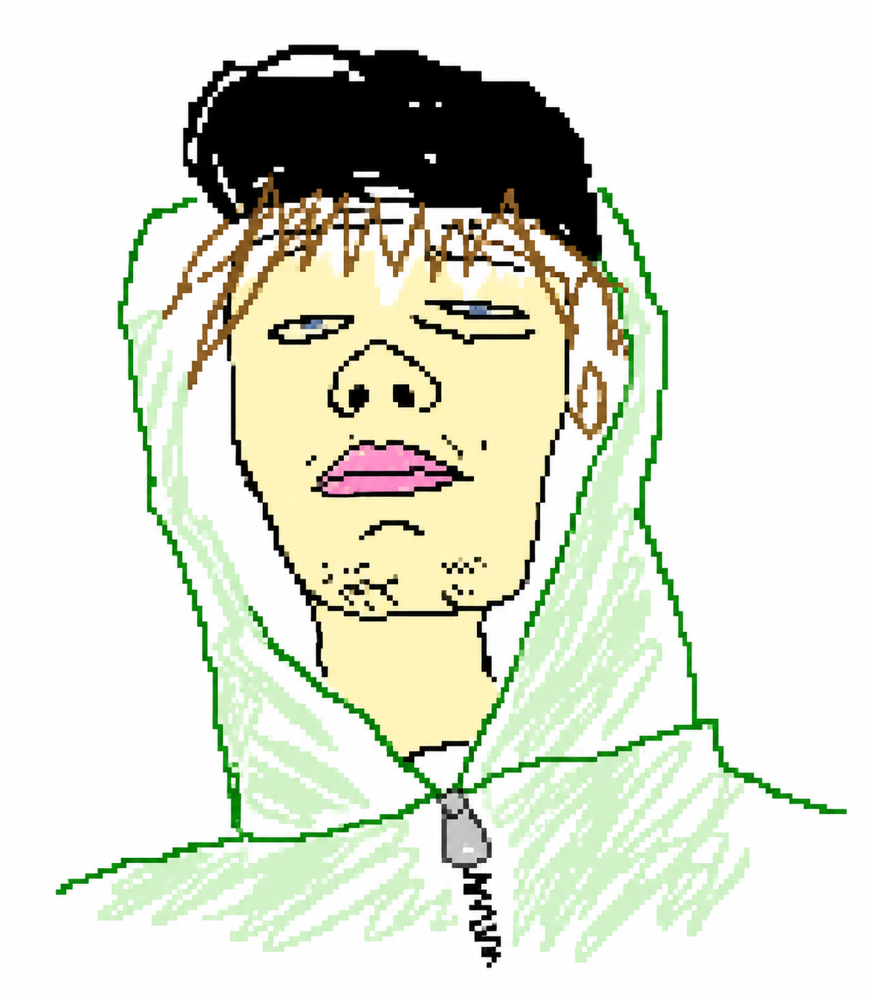

визуальные системы и интерфейсы. упор на эстетику, скорость и ощущение.

делаю визуальные системы и интерфейсы. фокус на чистой эстетике, быстрой реализации и сильном визуальном ощущении от каждого проекта.
2026 — н.в.
Медиацентр КГПАОУ «Авиатехникум» · Пермь
лидер в сфере IT-образования в Пермском крае
разрабатываю фирменный стиль для разных направлений техникума — от студенческих мероприятий до официальных коммуникаций.
работаю с контент-планами и аналитикой, повышаю охваты благодаря продуманному рабочему дизайну.
быстрая адаптация под разные задачи: принт, соцсети, айдентика, презентации.
figma / photoshop / illustrator / tailwind css / html / css
все работы
логотипы, айдентика, принт, веб — смешанный архив работ